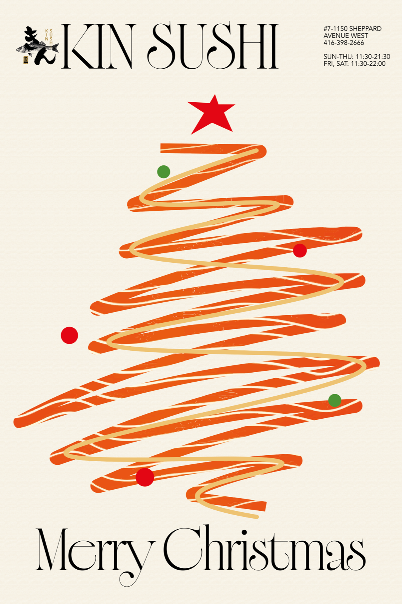
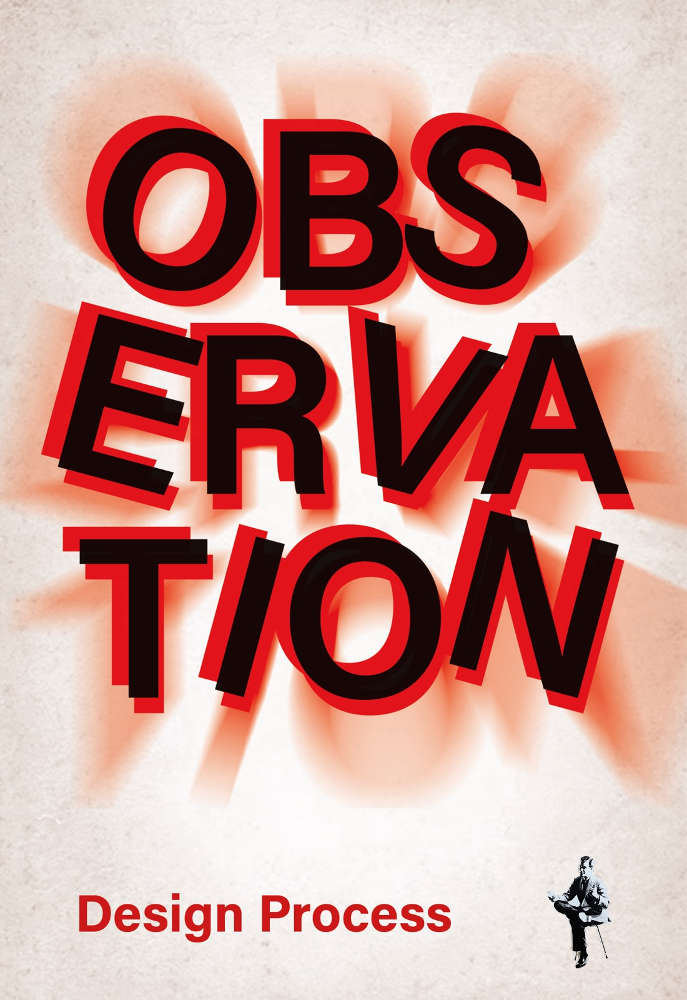
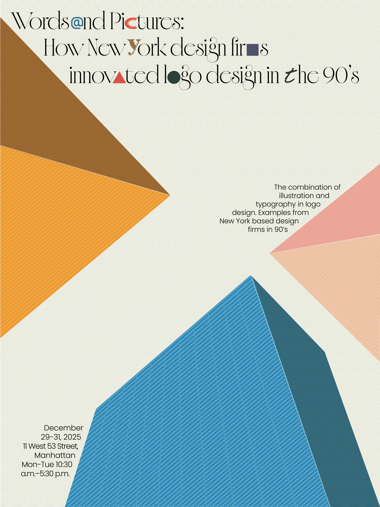
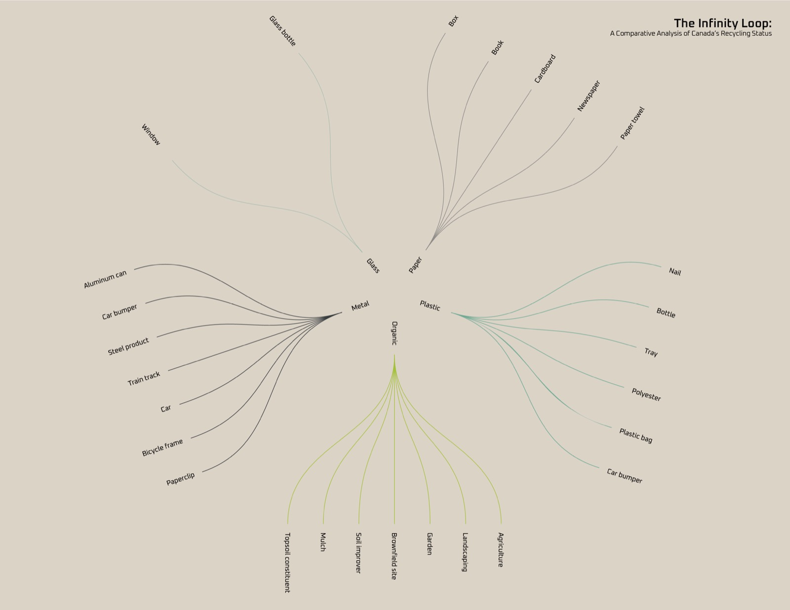
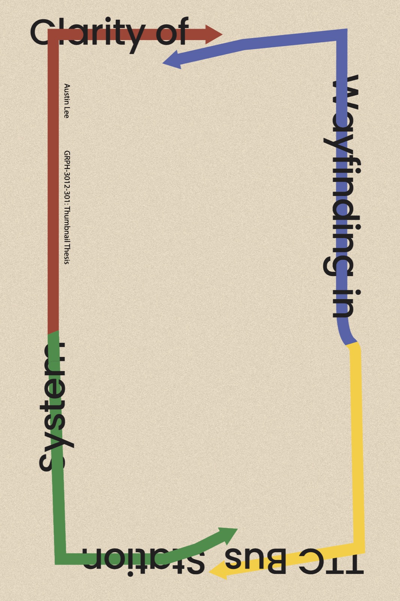

AUSTIN LEE
Graphic Designer / Photographer
An individual should be able to view design with indifference, and in doing so, be able to distinguish whether they find it satisfying or not.
A designer is recognized for their ability to create universally appealing designs, and it is through repeated challenges that what is achieved by chance becomes art.
Commercial, Poster
Graphic Design
Photograph
Austin Lee Portfolio. 2026




